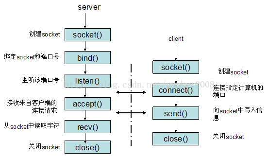
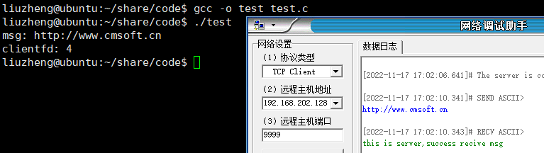

套接字编程？那是什么？
套接字编程？那是什么？
这篇文章，我们来看看网络编程，一个合格的后端开发者，网络编程是他必经的一条道路，可能有的小伙伴接触过网络原理，知道OSI模型，TCP/IP模型等等，知道很多网络通信的流程，知道很多复杂的原理，虽然底层很复杂，但好在我们并不需要直接的去操作那些来进行网络通讯，已经有大佬为我们封装好了，我们只需要会使用封装好的接口就好了。实际上，网络编程就是围绕着socket也就是我们所说的套接字进行的。所以有的时候就会有人说，网络编程实际上就是套接字编程，从某些意义上也没啥问题。
文件描述符fd
还记得那句经典的话吗？“Linux下一切皆文件”，Linux 系统中把一切都看做是文件，当进程打开现有文件或创建新文件时，内核向进程返回一个文件描述符，文件描述符就是内核为了高效管理已被打开的文件所创建的索引，用来指向被打开的文件，所有执行 I/O 操作的系统调用都会通过文件描述符。网络的连接也是一种I/O操作，所以我通过fd来进行一系列操作。
socket编程的流程
无论是服务端还是客户端，都是通过socket进行连接然后通信的，但两方需要进行的事情并不相同，具体流程如下：

我们可以看到server端和client端都需要先通过socket()创建socket，然后server端需要绑定socket和端口号，在通过listen()让绑定好的socket进入监听状态，这个时候我们server端就已经准备好进行连接了，之后我们的client就可以通过connet()和server端进行连接了，成功连接以后，server端和client端就可以进行消息传输了，待传输就结束，双方断开连接，关闭socket。fd在这里的体现并不明显，甚至都没有提到fd，其实fd就是一个socket的索引，这个等一下我们介绍API写代码的时候就可以知道了。接下来我们着重从server方面来了解这些函数。
socket()
1 |
|
这就是socket函数的原型，它返回一个int数据，这个返回的数据就是我们所说的fd，它用来标志是哪一个socket。socket函数需要三个参数，分别是domain，type，protocol。
domain代表的是用于设置网络通信的域，函数socket()根据这个参数选择协议族。它有以下这几个值：
| 名称 | 含义 | 名称 | 含义 |
|---|---|---|---|
| PF_UNIX,PF_LOCAL | 本地通信 | PF_X25 | ITU-T X25 / ISO-8208协议 |
| AF_INET,PF_INET | IPv4 Internet协议 | PF_AX25 | Amateur radio AX.25 |
| AF_INET6,PF_INET6 | IPv6 Internet协议 | PF_ATMPVC | 原始ATM PVC访问 |
| PF_IPX | IPX-Novell协议 | PF_APPLETALK | Appletalk |
| PF_NETLINK | 内核用户界面设备 | PF_PACKET | 底层包访问 |
我们常使用的是AF_INET和AF_INET6。
type代表的是用于设置套接字通信的类型，它的值如下：
| 名称 | 含义 |
|---|---|
| SOCK_STREAM | Tcp连接，提供序列化的、可靠的、双向连接的字节流。支持带外数据传输 |
| SOCK_DGRAM | 支持UDP连接（无连接状态的消息） |
| SOCK_SEQPACKET | 序列化包，提供一个序列化的、可靠的、双向的基本连接的数据传输通道，数据长度定常。每次调用读系统调用时数据需要将全部数据读出 |
| SOCK_RAW | RAW类型，提供原始网络协议访问 |
| SOCK_RDM | 提供可靠的数据报文，不过可能数据会有乱序 |
| SOCK_PACKET | 这是一个专用类型，不能呢过在通用程序中使用 |
我们常用的是SOCK_STREAM和SOCK_DGRAM。
protocol用于制定某个协议的特定类型，即type类型中的某个类型。通常某协议中只有一种特定类型，这样protocol参数仅能设置为0；但是有些协议有多种特定的类型，就需要设置这个参数来选择特定的类型。
当我们写好这些函数，那么内核就会给我们一个fd，标志这个我们创建好的socket。
bind()
1 |
|
好了，我们现在已经创建好了socket了，下一步我们要调用bind函数，将我们创建好的socket和端口进行绑定，那为什么一定要绑定端口呢？想象这样一个问题，现在我们在电脑上同时运行QQ和WeChat，那么我们通过WeChat发出的消息为什么不会被QQ接收到呢？因为两个进程创建的连接所绑定的端口号不同，所以才没有出现我们所说的问题，也就是说绑定端口号是为了将来别的程序和服务器进程连接后，不会出现数据错发的问题。所以我们服务端创建好socket后一定要绑定端口号。
我们来看bind函数，bind函数会返回一个int数据，这个数据如果是0就代表绑定成功，如果是-1就代表绑定失败，所以我们可以根据返回值来判断是否绑定成功了。bind函数有三个参数，分别是sockfd，sockaddr结构体，socklen_t，也就是结构体的大小。
sockfd代表一个socket的文件描述符，我们之前创建好的socket的文件描述符就可以在此传入。
接下来是一个sockaddr结构体指针，那我们先看看sockaddr结构体的内部：
1 |
|
我们可以看到sockaddr结构体内部有两个参数，一个sa_family，一个是sa_data[14]。sa_family代表的是地址族，sa_data[14]包含套接字中的目标地址和端口信息，但它们两个混在了一起并不是我们喜欢的，所以就有了一个新的结构体sockaddr_in：
1 |
|
我们可以看到sockaddr_in就将目标地址和端口信息分开了。而且看起来好像还多了一个属性sin_zero，这个属性是为了让sockaddr与sockaddr_in两个数据结构保持大小相同而保留的空字节，所以我们使用的时候不需要考虑它。
知道了这些，我们看看在编程的时候应该如何做，我们先声明一个sockaddr_in变量，然后初始化，将sin_family初始化成我们创建socket的时候使用的协议族(也就是domain属性)。之后我们需要绑定的是目的地址和端口号，这里要注意的是我们所输入的数据需要被转换为网络字节序才可以，所以我们需要使用htons(port)和htonl(address)函数才可以比如：
1 | struct sockaddr_in servaddr; |
这里INADDR_ANY代表的是任意地址，比如一台电脑有3块网卡，分别连接三个网络，那么这台电脑就有3个ip地址了，如果某个应用程序需要监听某个端口，那他要监听哪个网卡地址的端口呢？如果绑定某个具体的ip地址，你只能监听你所设置的ip地址所在的网卡的端口，其它两块网卡无法监听端口，如果我需要三个网卡都监听，那就需要绑定3个ip，也就等于需要管理3个套接字进行数据交换，这样岂不是很繁琐？所以我们使用INADDR_ANY不管是那个地址的端口给我返回的信息我们都处理，这样就将三个地址当做了一个地址对待。所以我们使用INADDR_ANY，当然我们需要使用htonl将它转换为网络字节序然后在放到.sin_addr.s_addr中。
之后就是绑定端口号了，计算机端口号从0到65535，其中众所周知端口： 1 - 1023 （1-25之间为众所周知的端口 ， 256 - 1023 为UNIX系统占用），这里说的众所周知端口是一些早已经被固定的端口号，比如80端口分配给WWW服务，21端口分配给FTP服务。注册端口： 1024 -49151 分配给进程或者应用。这些端口号在还没有被服务器资源占用时，可以由用户的APP动态注册获得。动态端口号：49152 - 65535 被称为动态端口号一般不固定分配某种服务而是动态分配的。一般可以使用 65000以上的就可以随便用。我们这里使用9999就可以，当然我们需要使用htons将它也转换为网络字节序。
之后我们进行一次强转就可以了：(struct sockaddr*)&servaddr。
最后一个参数是我们写好的地址大小了，我们使用sizeof就可以了。
所以完整的使用应该是这样的：
1 | int listenfd = socket(AF_INET, SOCK_STREAM, 0); |
listen()
好啦现在已经到了倒数第二步了，我们需要调用listen函数让绑定好的socket进入被动监听模式，让服务器一直监听端口是否有人连接。
1 |
|
我们可以看到listen函数需要两个参数一个是fd，一个是n。其中fd就是socket的fd，我们需要那个socket进入监听状态我们就将那个socket的fd放到里面，n代表的是等待队列10假如我们建立一个连接需要1秒，但同时有12个连接，我们设置的等待队列长度为10，那么有一个会进行连接，剩下10个会等待连接，1个会拒绝连接。
accept()
我们来看最后一步，accpet接受连接：
1 | extern int accept (int __fd, __SOCKADDR_ARG __addr,socklen_t *__restrict __addr_len); |
accept函数会返回一个int数据，这个数据就是我们之前监听到的连接过来的socket的fd，就好比说，我们原先在本机上打开了一个文件，让这个文件监听端口，然后等到客户端连接服务端后，监听文件检测到端口可读，就将端口的信息读取了出来，在本机上打开，所以我们本机通过accpet接受这个文件，并为它分配一个fd去管理它，如果连接失败了就返回-1。
accept函数需要三个参数，分别是fd，sockaddr，socklen_t。
fd，这个fd我们需要的是监听文件的fd，sockaddr和socklent_t代表的是监听到的文件的地址结构体和地址的长度。我们可以理解，我们从监听fd中获取到了客户端连接过来的fd的地址信息，长度，并把信息装进sockaddr中，长度装在socklen_t里面。
我们一般会这么写：
1 | struct sockaddr_in client; |
默认情况下，当程序执行到accept后会阻塞在这里不动，当有外来连接之后才会继续进行。当然了其实这是因为监听文件是阻塞的，我们也可以修改监听文件为非阻塞的，那么它就不会等待，当运行到accept后发现如果没有连接那么就跳过继续执行下面的。
将监听文件修改为非阻塞的代码为：
1 | int flag = fcntl(listenfd, F_GETFL, 0); |
设置为非阻塞后，如果没有连接accpet就会返回-1，然后继续下去。
数据的接收和发送—recv和send
数据的接收和发送很简单，用到了两个函数一个是recv函数，一个是send函数
1 |
|
我们可以看到两个函数非常相似，他们都需要四个参数，分别是fd，字符数组，字符串长度，flag。
在recv中，fd表示我要从那个客户端接收消息，第二个字符数组用来装我们接收到的字符，第三个代表我们要接受的字符串长度，第四个参数我们一般置0就好。recv会返回一个int数据，表示我们实际接收到的字符串长度是多少，这里要提的是。
在send中，fd表示我要向那个客户端发送消息，第二个字符数组用来装我们要发送的字符，第三个代表我们要发送的字符串长度，第四个参数我们同样置0就好。
简单的服务器和客户端通信
接下来我们使用一个简单的例子来看看代码是如何书写的：
1 |
|
我们可以看一下结果：

看消息顺利的沟通了，但好像有一个问题，我们的服务器怎么只能用一次啊！我们加一个while(1)试试，发现当客户端断开连接后，服务端会重复的打印出我们消息，这不是我们想要的，那我们怎么解决呢？卖个关子，我们下回分解。
 wechat
wechat alipay
alipay